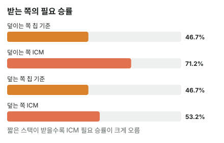

안녕하세요. E12에서 지면 탈락하는 콜일수록 리스크 프리미엄이 커진다고 했죠.
오늘은 같은 크기의 칩 대결을 양쪽에서 봐요. 빅스택이 중간 스택에게 올인할 때와, 중간 스택이 빅스택에게 올인할 때, 받는 쪽의 부담이 얼마나 다른지 하나의 숫자로 재요. 그 숫자가 버블 팩터예요.
이 글에서 배울 것
- 버블 팩터가 무엇이고, 왜 "상금 비율 ÷ 칩 비율"로 재는지
- 같은 칩 대결인데 덮이는 쪽(지면 탈락)과 덮는 쪽(져도 생존)의 콜 부담이 크게 다른 이유
- 버블 팩터를 필요 승률로 바꿔 실전에서 쓰는 법
1단계. 버블 팩터란?
한 줄 정의
버블 팩터 = 같은 대결을 상금으로 쟀을 때, 칩으로 잴 때보다 지는 쪽이 몇 배 무거운지를 나타낸 숫자예요.
비유: 환율
칩으로 잰 손익을 상금으로 바꾸는 환율이라고 생각해 보세요. 칩으로는 지는 쪽과 이기는 쪽이 비슷한 내기도, 상금으로 바꾸면 지는 쪽이 훨씬 비싸게 계산될 수 있어요. 그 "비싸지는 정도"가 버블 팩터예요.
공식
버블 팩터 = (지면 잃는 상금 ÷ 이기면 얻는 상금) ÷ (지면 잃는 칩 ÷ 이기면 얻는 칩)
모두 폴드할 때와 비교한 값이에요. 앞의 괄호가 상금 비율, 뒤의 괄호가 칩 비율이에요.
- 버블 팩터가 1이면: 상금으로 재도 칩과 같은 비율 → 칩 기준대로 콜해도 돼요
- 1보다 클수록: 지는 쪽이 상금으로 더 무거워 → 칩 기준보다 더 이겨야 콜이에요
칩을 똑같이 걸고 받는 대결이면 뒤 괄호가 1이라, 흔히 쓰는 "잃는 상금 ÷ 얻는 상금"과 같아요. 오늘은 칩이 다른 대결도 재려고 칩 비율로 한 번 더 나눴어요.
2단계. 조건 고정
- 4명 남음, 상금 1등 50 · 2등 30 · 3등 20 · 4등 0(예시 단위)
- 블라인드 SB 0.5BB · BB 1BB, 앤티 없음, 전체 칩 65BB
- 스택은 30BB·15BB·15BB·5BB 네 명. CO·BTN은 폴드하고, SB와 BB(Hero)만 대결해요
같은 대결을 두 방향으로 놓을게요. 3단계는 Hero가 15BB, 4단계는 Hero가 30BB예요. SB의 올인 범위는 두 경우 모두 E11과 같은 넓은 범위(22+, A2s+, A2o+, K2s+, K7o+, Q8s+, QTo+, J8s+, JTo, T8s+, 98s)라고 가정할게요.
결론부터 말할게요. 이 조건에서 같은 15BB 대결인데, 덮이는 쪽은 약 71.2%, 덮는 쪽은 약 53.2%를 이겨야 콜이에요. 그래서 A♦T♣·JJ는 덮는 쪽이면 콜, 덮이는 쪽이면 폴드예요.
3단계. Hero(BB 15BB)가 빅스택 SB 30BB의 올인을 받으면
BTN 15BB, CO 5BB예요. SB가 Hero를 덮어서(Hero보다 칩이 많아서), 지면 Hero가 탈락해요.
세 경우
| 경우 | Hero | SB | Hero 기대 상금 |
|---|---|---|---|
| 폴드 | 15 − 1 = 14 | 30 + 1 = 31 | 약 25.67 |
| 콜해서 이김 | 15 + 15 = 30 | 15 | 약 36.04 |
| 콜해서 짐 | 0 (탈락) | 45 | 0 |
칩 비율
폴드(14BB)와 비교하면, 지면 14 − 0 = 14BB를 잃고 이기면 30 − 14 = 16BB를 얻어요.
칩 비율 = 14 ÷ 16 = 0.875
상금 비율
- 지면 잃는 상금 = 폴드 − 짐 = 25.67095 − 0 = 25.67095
- 이기면 얻는 상금 = 이김 − 폴드 = 36.04029 − 25.67095 = 10.36934
상금 비율 = 25.67095 ÷ 10.36934 = 약 2.48
버블 팩터
버블 팩터 = 2.47566 ÷ 0.875 = 약 2.83
필요 승률로 바꾸면 E11의 식 (폴드 − 짐) ÷ (이김 − 짐)이에요.
ICM 필요 승률 = 25.67095 ÷ 36.04029 = 약 71.2% (칩 기준 14 ÷ 30 = 약 46.7%)
4단계. Hero(BB 30BB)가 중간 스택 SB 15BB의 올인을 받으면
이번엔 BTN 15BB, CO 5BB, SB 15BB, Hero 30BB예요. Hero가 덮어서, 져도 30 − 15 = 15BB가 남아요.
세 경우
| 경우 | Hero | SB | Hero 기대 상금 |
|---|---|---|---|
| 폴드 | 30 − 1 = 29 | 15 + 1 = 16 | 약 35.5 |
| 콜해서 이김 | 30 + 15 = 45 | 0 (탈락) | 약 43.42 |
| 콜해서 짐 | 30 − 15 = 15 | 30 | 약 26.5 |
이기면 SB가 탈락해 남은 셋이 모두 상금권이 돼요. 버블이 터지면서 Hero는 3등 이상이 확정되고 칩 리더가 되니, 이김 기대 상금이 약 43.42까지 올라가요. 져도 15BB가 남아 살아 있고요.
칩 비율은 3단계와 같은 0.875예요(지면 29 − 15 = 14 잃고, 이기면 45 − 29 = 16 얻음).
- 지면 잃는 상금 = 35.50091 − 26.49634 = 9.00457
- 이기면 얻는 상금 = 43.42308 − 35.50091 = 7.92217
상금 비율 = 9.00457 ÷ 7.92217 = 약 1.14 → 버블 팩터 = 1.13663 ÷ 0.875 = 약 1.3
ICM 필요 승률 = (35.50091 − 26.49634) ÷ (43.42308 − 26.49634) = 약 53.2% (칩 기준 약 46.7%)
나란히 놓기
| 받는 쪽 | 버블 팩터 | 칩 기준 | ICM 필요 승률 |
|---|---|---|---|
| 덮이는 쪽(15BB가 30BB의 올인을 받음) | 약 2.83 | 약 46.7% | 약 71.2% |
| 덮는 쪽(30BB가 15BB의 올인을 받음) | 약 1.3 | 약 46.7% | 약 53.2% |

버블 팩터를 필요 승률로 바꾸기
상금 비율을 R이라고 하면, 필요 승률은 R ÷ (1 + R)이에요. 잃는 몫 ÷ (따는 몫 + 잃는 몫)의 위아래를 따는 몫으로 나눈 거예요. 그리고 R = 버블 팩터 × 칩 비율이에요.
3단계: R = 2.82932 × 0.875 = 2.47566 → 2.47566 ÷ 3.47566 = 약 71.2%
칩 기준: 버블 팩터가 1이면 R = 0.875 → 0.875 ÷ 1.875 = 약 46.7%
버블 팩터 1이 곧 칩 기준인 이유가 이거예요. 버블 팩터가 커질수록 R이 커지고, 필요 승률이 올라가요.
같은 핸드로 보면
같은 SB 올인 범위를 상대로 한 Hero 핸드의 에퀴티를 두 기준선에 대 볼게요.
| Hero 핸드 | 에퀴티 | 덮는 쪽(53.2%) | 덮이는 쪽(71.2%) |
|---|---|---|---|
| Q♣Q♠ | 약 71.6% | 콜 | 콜(겨우) |
| J♣J♠ | 약 68.6% | 콜 | 폴드 |
| A♦T♣ | 약 56.5% | 콜 | 폴드 |
덮이는 쪽에서는 JJ도 접어야 하고, QQ가 겨우 선을 넘어요.
이게 무슨 뜻이냐면
칩으로는 완전히 같은 대결이에요. 걸린 칩도 15BB, 칩 비율도 0.875로 같아요. 그런데 상금으로 재면, 덮이는 쪽은 71.2%를 넘는 핸드가 아니면 콜하기 어렵고, 덮는 쪽은 53.2%면 돼요. 이 조건에서 빅스택의 올인을 중간 스택이 받기 어려운 이유가 이거예요.
왜 그럴까: 덮이는 쪽은 "바닥"까지 떨어져요
잃는 몫이 다르게 생겼어요
두 방향의 차이는 질 때에서 나와요.
- 덮이는 쪽(3단계): 지면 칩이 0, 기대 상금도 0이에요. 폴드로 지키던 약 25.67을 통째로 잃어요
- 덮는 쪽(4단계): 지면 15BB가 남아 기대 상금이 약 26.5예요. 폴드(약 35.5)에서 약 9만 잃어요
이기는 쪽은 약 10.37과 약 7.92로 차이가 작고, 지는 쪽은 약 25.67과 약 9로 세 배 가까이 차이 나요. 그러니 상금 비율을 가른 건 거의 지는 쪽의 크기예요.
칩은 같은데 상금이 다른 이유
칩 15BB는 누가 잃든 15BB예요. 하지만 상금으로는, 마지막 15BB를 잃는 것(탈락)과 30BB 중 15BB를 잃는 것(생존)은 전혀 다른 일이에요. E10에서 본 것처럼 칩이 적을수록 칩 하나가 비싸고, 마지막 칩은 가장 비싸요. 덮이는 쪽은 그 가장 비싼 칩까지 걸어야 해요.
받는 쪽이 조이면, 거는 쪽은 폴드를 더 받아요
받는 쪽이 71.2%를 요구하면, 위 표처럼 JJ도 접어요. 올인하는 빅스택은 그만큼 폴드를 자주 받는다는 뜻이에요. 이게 이 조건에서 빅스택의 올인이 무서운 이유예요.
자주 하는 실수
실수 1. "같은 15BB 대결이니 부담도 같다" 칩으로는 3단계와 4단계가 똑같이 14 잃고 16 따는 대결이었어요. 그런데 버블 팩터는 약 2.83과 약 1.3, 필요 승률은 약 71.2%와 약 53.2%로 크게 갈렸어요. 콜하기 전에 누가 누구를 덮는지부터 봐야 해요.
실수 2. "빅스택이면 ICM 부담이 없다" 4단계의 빅스택도 버블 팩터가 약 1.3이라 칩 기준(46.7%)보다 꽤 더 필요했어요(약 53.2%). 덮는 쪽도 지면 15BB로 줄어 순위 경쟁에서 밀리니까요. 부담이 작을 뿐 없지는 않아요.
실수 3. 버블 팩터를 칩 비율 없이 상금 비율로만 보기 3단계 상금 비율 약 2.48만 보고 "칩 기준보다 2.48배 무거워졌다"고 하면 틀려요. 칩으로도 원래 14 대 16, 0.875의 비율이 있었거든요. 칩 비율로 나눠서 칩 때문에 원래 있던 몫을 걷어 내야 상금 때문에 더 무거워진 정도가 나와요.
"그럼 빅스택은 올인할 때 손해 볼 일이 없나요?"
좋은 질문이에요. 그렇지 않아요. 오늘 계산한 건 받는 쪽의 부담뿐이에요. 올인한 빅스택도 콜당해 지면 30BB에서 15BB로 줄어 순위 경쟁에서 밀려요. 올인하는 쪽의 손익은 I18 방식대로 "접을 때 몫 + 콜 받을 때 몫"으로 따로 계산해야 하고, 오늘 숫자만으로 "마음껏 밀어도 된다"고 할 수는 없어요.
숫자가 뒤집히는 지점
- Hero 에퀴티가 53.2%와 71.2% 사이에 있는 핸드(오늘은 JJ·A♦T♣)는, 누가 누구를 덮느냐에 따라 콜과 폴드가 뒤집혀요
- 그 기준선을 움직이는 건 지면 내가 탈락하는지예요
선생님의 한마디
버블에서 올인을 받으면 콜하기 전에 이 순서로 봐요.
- 올인을 맞으면 상대 스택과 내 스택(낸 블라인드 포함)을 비교해 덮이는지 보기
- 덮인다면 칩 기준에 크게(오늘은 약 24.6%p) 얹어서, 오늘 표처럼 JJ도 접을 수 있다고 생각하기
- 덮는다면 칩 기준에 조금만(오늘은 약 6.5%p) 얹어 넓게 받기
연습 문제 (같은 버블, 상금 50·30·20·0)
문제 1. Hero는 BB 15BB, SB 5BB가 올인했어요(BTN 30BB, CO 15BB). 폴드 약 25.15, 이김 약 32.79, 짐(Hero 15 − 5 = 10BB) 약 19.4예요. 칩 비율부터 구해서 버블 팩터를 구해 보세요.
정답 보기
칩: 폴드하면 14BB, 지면 10BB라 4BB 잃고, 이기면 20BB라 6BB 얻어요. 칩 비율 4 ÷ 6 = 약 0.67. 상금 비율 = (25.15362 − 19.4016) ÷ (32.79121 − 25.15362) = 5.75202 ÷ 7.63759 = 약 0.75. 버블 팩터 = 0.75312 ÷ 0.66667 = 약 1.13. 1보다 크지만 3단계(약 2.83)보다 훨씬 작아요. ICM 필요 승률 약 43%(칩 기준 4 ÷ 10 = 40%). 같은 15BB인데, 이번엔 Hero가 덮는 쪽이라 져도 살아남아요.
문제 2. 이번엔 Hero가 빅스택 BB 30BB, SB 5BB가 올인했어요(BTN 15BB, CO 15BB). 폴드 약 35.34, 이김 약 39.38, 짐 약 32.43이에요. 버블 팩터는?
정답 보기
칩 비율은 문제 1과 같은 4 ÷ 6 = 약 0.67. 상금 비율 = (35.34289 − 32.43257) ÷ (39.38462 − 35.34289) = 2.91032 ÷ 4.04173 = 약 0.72. 버블 팩터 = 0.72007 ÷ 0.66667 = 약 1.08. 빅스택이 짧은 스택을 받으면 칩 기준과 거의 같아요(ICM 필요 승률 약 41.9%).
홀덤학습 AOF 차트(새틀 프리플랍 차트) → 그외 게임들에서 테이블 인원 4명 → 앤티 없음 → 블라인드 0.5/1 → 자리별 스택·상금 → 마감 후(ICM) → 포지션 BB → 앞에서 액션한 자리 SB로 맞추면 콜 필요 승률이 칩 기준과 나란히 나와요. 화면은 블라인드 압박이 들어가 숫자가 다르니, 차이가 큰 3단계 장면(약 71.2% 대 약 46.7%)으로 ICM 쪽이 더 높게 나오는지 확인해 보세요.
핵심 정리
- 버블 팩터 = 상금 비율 ÷ 칩 비율(폴드 대비). 1이면 칩 기준 그대로, 클수록 콜이 무거워요
- 같은 칩 대결이라도 덮이는 쪽은 지면 바닥(0)까지 떨어져 버블 팩터가 크게 뛰어요
- 덮는 쪽도 버블 팩터가 1보다 커서(약 1.3), 칩 기준보다는 조금 더 이겨야 해요
- 필요 승률 = R ÷ (1 + R), R = 버블 팩터 × 칩 비율. 버블 팩터 1이면 칩 기준 그대로예요
정리하며
오늘은 30BB와 15BB의 같은 대결을 두 방향으로 놓고 버블 팩터를 쟀어요.
15BB가 30BB의 올인을 받으면 지면 탈락이라 버블 팩터 약 2.83, 필요 승률 약 71.2%였어요. 30BB가 15BB의 올인을 받으면 져도 15BB가 남아 버블 팩터 약 1.3, 필요 승률 약 53.2%였죠. 칩으로는 같은 14 대 16의 대결이었는데, 지는 쪽의 상금 크기가 결과를 갈랐어요.
다음 글 E15에서는 ICM을 잠시 내려놓고 앤티를 봐요. 칩 기준 푸시/폴드에서 앤티가 있으면 왜 더 넓게 올인하는지 다뤄요.
AI 작성 · 숫자는 계산 검증 (ICM: 칩 비율로 등수를 차례로 뽑는 방식) · 스택·상금은 이 예시로 고정(전체 65BB) · 블라인드 압박·앤티는 넣지 않음 · 이번 한 번의 결정 기준